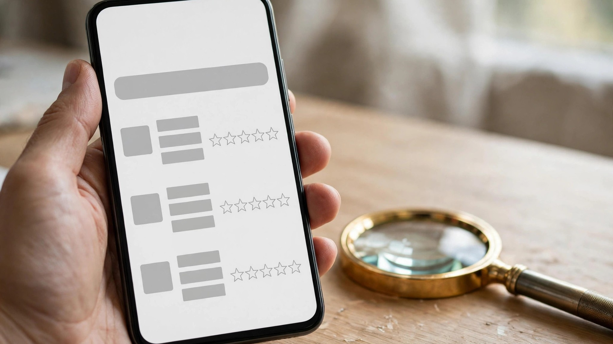

How to tell if an app is safe to download: the 60-second check

Knowing how to tell if an app is safe to download takes about sixty seconds, and it is worth doing every time — because the app store listing is marketing, not a safety report. Most apps are fine. A small number are not: they harvest data they do not need, hide their real purpose, or turn into something else after install. Five quick checks separate the two groups, and none of them needs any technical skill — just the listing page and a minute of attention.
1. Start with the developer
Every listing names a developer. Tap the name and look at what else they made: a real developer usually has more than one app, a working website, and a contact address that answers. A single-app developer with no website and no history is not proof of a scam, but it is a reason to slow down and check the rest harder. Copycat apps are common — a popular app’s name with one letter changed, or the same icon with different colours. If the developer name does not match the brand on the icon, or the listing looks like a clone of an app you know, stop and search for the real one. The developer is the identity of the app; when the identity does not check out, nothing else on the listing matters.
2. Read the Data Safety section
On Google Play, the Data Safety section says what the app collects, what it shares, and whether you can ask for your data to be deleted. On the App Store, the App Privacy section does the same job. Read it the way you would read a contract: a flashlight app that collects your location and contacts is asking for data it cannot need, and that mismatch is information. Look for three things — what is collected, what is shared with third parties, and whether data deletion is offered. An app that collects little, shares less and lets you delete your data is behaving the way a careful app should. An app that collects broadly and shares widely, with no deletion option, is telling you its business is your data.
3. Read recent reviews the right way
Reviews are useful only if you read them the right way. Sort by most recent, not most helpful, and read the last few weeks: an app can change owners or change behaviour, and old praise does not cover new behaviour. Look for specific reviews — people describing what the app did, what it asked for, whether payouts arrived — and discount vague praise repeated word for word. Pay attention to patterns, not single complaints: three recent reviews mentioning surprise charges, aggressive ads or data demands are a pattern, and patterns are the verdict. A healthy app has a mix of praise and criticism, because real users disagree. A wall of identical five-star praise with no detail is a warning, not a recommendation.
4. Permissions vs purpose
Permissions are the clearest safety signal an app gives you, because they are a direct statement of what it wants to access. The rule is simple: every permission must match the app’s purpose. A maps app needs location; a notes app does not. A camera app needs the camera; a calculator does not. Before you install, check the permission list on the listing and ask whether each one makes sense for what the app does. Our permissions audit guide walks through every common permission — location, microphone, camera, contacts, photos — and says which to allow, which to deny, and how to change them later. If a permission does not match the purpose, that is the check telling you to stop.
5. Play Protect and the final install check
The last check is the store itself. On Android, Google Play Protect scans apps for known harmful behaviour — keep it on, and pay attention when it warns you. On iPhone, the App Store review process plays a similar role, but it is not perfect either: a clean store listing is a good sign, not a guarantee. Install only from the official store, never from a link, a file or a message. And when the checks pass and you decide to install, keep the install honest: pick an app that fits your phone, install it on Android, and open it once so it counts. After install, give the app ten honest minutes: if it asks for more permissions, pushes a subscription, or behaves differently from its listing, uninstall it. Sixty seconds before install saves you the hour of cleanup after a bad one.
Key takeaways
- Check the developer first: a real developer has other apps, a website and a contact that answers.
- Read the Data Safety section and the permissions list — every permission must match the app’s purpose.
- Read recent reviews sorted by date, look for patterns, and install only from the official store.
Pick one app that fits your phone, install it, and open it once so it counts — every app walked by us first.
Check today’s app picksSponsored link. For adults 18+. Availability and rewards vary by provider, country and device — nothing is guaranteed, always read the terms.
Quick questions
Is a high rating enough to trust an app?
No. Ratings can be gamed, and a high average says nothing about recent behaviour. Read recent reviews sorted by date, and check the developer, the Data Safety section and the permissions too.
What should I do if an app asks for a strange permission?
Deny it first — you can change it later. If the app stops working without it, ask whether the permission matches the app’s purpose. If it does not, uninstall the app.
Can I trust apps from outside the official store?
No. Install only from Google Play or the App Store. Apps from links, files or messages skip the store’s checks, and that is where most harmful apps come from.